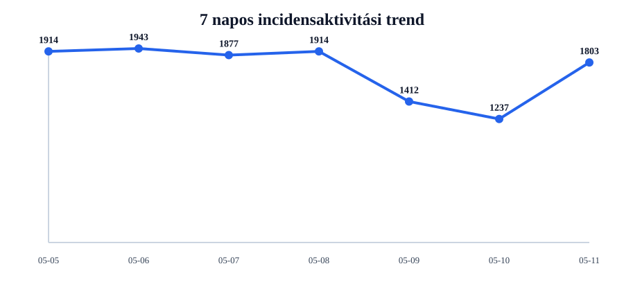
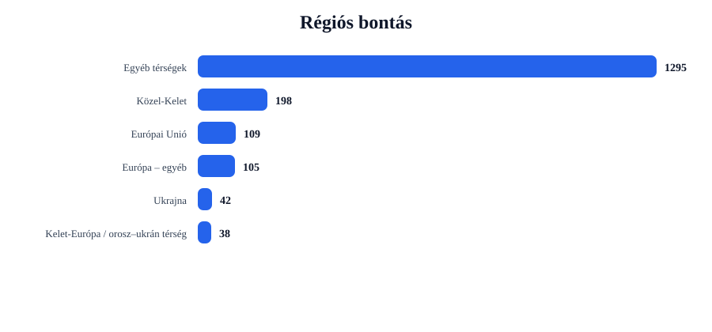
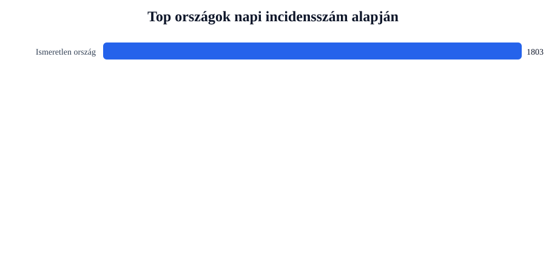
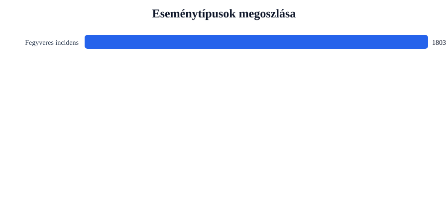

Rövid napi értékelés
Az incidensek száma emelkedett. A rendszer 566 darabbal több eseményt azonosított, ami 45.8% növekedést jelent.
A legtöbb találat ehhez az országhoz kapcsolódott: United States (583 esemény).
A napi aktivitás legerősebb regionális súlypontja: Egyéb térségek (638 esemény).
A leggyakoribb részletes támadástípus: Fegyveres összecsapás (1200 találat).
A napi kép korai figyelmeztető OSINT-jelzésként értelmezhető. A részletes támadástípusok kulcsszavas besorolással készülnek, ezért elemzési támpontot adnak, de nem helyettesítik a kézi ellenőrzést.
Régiós helyzetkép
Európai Unió
Az Európai Unió térségében a jelentés elsősorban biztonsági, rendészeti vagy fegyveres incidensekhez kapcsolódó nyílt forrású találatokat azonosított.
Azonosított események száma: 109. Leginkább érintett országok: Ireland (23), France (12), Greece (12). Domináns támadástípusok: Fegyveres összecsapás (71), Rajtaütés / fegyveres támadás (37), Tömeges erőszak (1).
| Cím | Ország | Helyszín | Részletes típus | Forrás |
|---|---|---|---|---|
| fight – Netherlands | Netherlands | Netherlands | Fegyveres összecsapás | www.wgal.com |
| fight – France | France | France | Fegyveres összecsapás | www.fox6now.com |
| fight – Germany | Germany | Germany | Fegyveres összecsapás | www.hindustantimes.com |
| fight – Paris, France (general), France | France | Paris, France (general), France | Fegyveres összecsapás | investinglive.com:443 |
| fight – Italy | Italy | Italy | Fegyveres összecsapás | www.dailyliberal.com.au |
Kelet-Európa / orosz–ukrán térség
A kelet-európai biztonsági blokkban az orosz–ukrán háborúhoz és annak közvetlen környezetéhez kapcsolódó események adhatják a napi aktivitás jelentős részét.
Azonosított események száma: 80. Leginkább érintett országok: Ukraine (42), Russia (38). Domináns támadástípusok: Robbantás / IED (51), Fegyveres összecsapás (18), Rajtaütés / fegyveres támadás (11).
| Cím | Ország | Helyszín | Részletes típus | Forrás |
|---|---|---|---|---|
| fight – Kherson, Khersons'ka Oblast', Ukraine | Ukraine | Kherson, Khersons'ka Oblast', Ukraine | Robbantás / IED | www.irishtimes.com |
| fight – Kharkiv, Kharkivs'ka Oblast', Ukraine | Ukraine | Kharkiv, Kharkivs'ka Oblast', Ukraine | Robbantás / IED | www.irishtimes.com |
| fight – Belgorod, Belgorodskaya Oblast', Russia | Russia | Belgorod, Belgorodskaya Oblast', Russia | Robbantás / IED | www.bignewsnetwork.com |
| assault – Kherson, Khersons'ka Oblast', Ukraine | Ukraine | Kherson, Khersons'ka Oblast', Ukraine | Robbantás / IED | www.freemalaysiatoday.com |
| assault – Belgorod, Belgorodskaya Oblast', Russia | Russia | Belgorod, Belgorodskaya Oblast', Russia | Robbantás / IED | www.freemalaysiatoday.com |
Balkán
A Balkán esetében a napi kép különösen fontos, mert a térségben az alacsonyabb intenzitású incidensek is gyorsan politikai és biztonsági jelentőséget kaphatnak.
Azonosított események száma: 13. Leginkább érintett országok: Turkey (12), Albania (1). Domináns támadástípusok: Fegyveres összecsapás (9), Rajtaütés / fegyveres támadás (3), Tömeges erőszak (1).
| Cím | Ország | Helyszín | Részletes típus | Forrás |
|---|---|---|---|---|
| fight – Istanbul, Istanbul, Turkey | Turkey | Istanbul, Istanbul, Turkey | Fegyveres összecsapás | economictimes.indiatimes.com |
| fight – Ankara, Ankara, Turkey | Turkey | Ankara, Ankara, Turkey | Fegyveres összecsapás | www.wsws.org |
| fight – Turkey | Turkey | Turkey | Fegyveres összecsapás | nypost.com |
| fight – Anadolu, Turkey (general), Turkey | Turkey | Anadolu, Turkey (general), Turkey | Fegyveres összecsapás | www.yahoo.com |
| assault – Esenyurt, Istanbul, Turkey | Turkey | Esenyurt, Istanbul, Turkey | Rajtaütés / fegyveres támadás | bianet.org |
Közel-Kelet
A Közel-Kelet továbbra is kiemelt biztonsági térség. A jelentésben megjelenő események főként fegyveres összecsapásokhoz, támadásokhoz vagy katonai tevékenységhez kapcsolódnak.
Azonosított események száma: 196. Leginkább érintett országok: Iran (37), Israel (37), West Bank (19). Domináns támadástípusok: Fegyveres összecsapás (132), Rajtaütés / fegyveres támadás (58), Tömeges erőszak (4).
| Cím | Ország | Helyszín | Részletes típus | Forrás |
|---|---|---|---|---|
| fight – Shahed, Fars, Iran | Iran | Shahed, Fars, Iran | Dróntámadás | www.rnz.co.nz |
| fight – Tehran, Tehran, Iran | Iran | Tehran, Tehran, Iran | Fegyveres összecsapás | slguardian.org |
| assault – Gaza, Israel (general), Israel | Israel | Gaza, Israel (general), Israel | Rajtaütés / fegyveres támadás | thepressproject.gr |
| fight – Lebanon | Lebanon | Lebanon | Fegyveres összecsapás | gcaptain.com |
| fight – Iraq | Iraq | Iraq | Fegyveres összecsapás | www.dailyexcelsior.com |
Afrika
A térségben a rendszer nyílt forrású biztonsági eseményeket azonosított.
Azonosított események száma: 240. Leginkább érintett országok: Nigeria (118), South Africa (27), Mali (9). Domináns támadástípusok: Fegyveres összecsapás (163), Rajtaütés / fegyveres támadás (75), Tömeges erőszak (2).
| Cím | Ország | Helyszín | Részletes típus | Forrás |
|---|---|---|---|---|
| fight – Abuja, Abuja Federal Capital Territory, Nigeria | Nigeria | Abuja, Abuja Federal Capital Territory, Nigeria | Fegyveres összecsapás | www.newsghana.com.gh |
| fight – South Africa | South Africa | South Africa | Fegyveres összecsapás | thesun.ng |
| fight – Nigeria | Nigeria | Nigeria | Fegyveres összecsapás | dailytrust.com |
| assault – Abuja, Abuja Federal Capital Territory, Nigeria | Nigeria | Abuja, Abuja Federal Capital Territory, Nigeria | Rajtaütés / fegyveres támadás | www.thisdaylive.com |
| fight – Shiroro, Niger, Nigeria | Nigeria | Shiroro, Niger, Nigeria | Fegyveres összecsapás | dailypost.ng |
Ázsia
A térségben a rendszer nyílt forrású biztonsági eseményeket azonosított.
Azonosított események száma: 249. Leginkább érintett országok: India (108), Pakistan (27), China (21). Domináns támadástípusok: Fegyveres összecsapás (173), Rajtaütés / fegyveres támadás (69), Határincidens (6).
| Cím | Ország | Helyszín | Részletes típus | Forrás |
|---|---|---|---|---|
| assault – Bombay, Maharashtra, India | India | Bombay, Maharashtra, India | Rajtaütés / fegyveres támadás | www.heraldgoa.in |
| fight – Bombay, Maharashtra, India | India | Bombay, Maharashtra, India | Fegyveres összecsapás | www.heraldgoa.in |
| fight – India | India | India | Fegyveres összecsapás | www.ecumenicalnews.com |
| fight – Delhi, Delhi, India | India | Delhi, Delhi, India | Fegyveres összecsapás | www.dailyexcelsior.com |
| fight – Islamabad, Islamabad, Pakistan | Pakistan | Islamabad, Islamabad, Pakistan | Fegyveres összecsapás | www.trend.az |
Amerika
A térségben a rendszer nyílt forrású biztonsági eseményeket azonosított.
Azonosított események száma: 168. Leginkább érintett országok: United States (108), Mexico (9), Venezuela (5). Domináns támadástípusok: Fegyveres összecsapás (112), Rajtaütés / fegyveres támadás (53), Terrorcselekmény / milíciaaktivitás (2).
| Cím | Ország | Helyszín | Részletes típus | Forrás |
|---|---|---|---|---|
| fight – Bahamas, The | The | Bahamas, The | Terrorcselekmény / milíciaaktivitás | www.thenassauguardian.com |
| fight – South Beach, Bahamas, The (general), Bahamas, The | The | South Beach, Bahamas, The (general), Bahamas, The | Terrorcselekmény / milíciaaktivitás | www.tribune242.com |
| fight – Alabama, United States | United States | Alabama, United States | Fegyveres összecsapás | www.wgrz.com |
| fight – Florida, United States | United States | Florida, United States | Fegyveres összecsapás | www.fox43.com |
| fight – Georgia, United States | United States | Georgia, United States | Fegyveres összecsapás | www.scsu.edu |
Európa – egyéb
A térségben a rendszer nyílt forrású biztonsági eseményeket azonosított.
Azonosított események száma: 110. Leginkább érintett országok: United Kingdom (90), Switzerland (5), Norway (4). Domináns támadástípusok: Fegyveres összecsapás (77), Rajtaütés / fegyveres támadás (32), Tömeges erőszak (1).
| Cím | Ország | Helyszín | Részletes típus | Forrás |
|---|---|---|---|---|
| assault – United Kingdom | United Kingdom | United Kingdom | Rajtaütés / fegyveres támadás | www.gazettelive.co.uk |
| fight – United Kingdom | United Kingdom | United Kingdom | Fegyveres összecsapás | www.tvguide.co.uk |
| fight – London, London, City of, United Kingdom | United Kingdom | London, London, City of, United Kingdom | Fegyveres összecsapás | goss.ie |
| assault – London, London, City of, United Kingdom | United Kingdom | London, London, City of, United Kingdom | Rajtaütés / fegyveres támadás | www.yahoo.com |
| fight – Greater Manchester, United Kingdom (general), United Kingdom | United Kingdom | Greater Manchester, United Kingdom (general), United Kingdom | Fegyveres összecsapás | www.thenational.scot |
Egyéb térségek
A térségben a rendszer nyílt forrású biztonsági eseményeket azonosított.
Azonosított események száma: 638. Leginkább érintett országok: United States (474), Australia (98), Canada (33). Domináns támadástípusok: Fegyveres összecsapás (445), Rajtaütés / fegyveres támadás (186), Tömeges erőszak (4).
| Cím | Ország | Helyszín | Részletes típus | Forrás |
|---|---|---|---|---|
| fight – Australia | Australia | Australia | Fegyveres összecsapás | www.northerndailyleader.com.au |
| fight – Washington, District of Columbia, United States | United States | Washington, District of Columbia, United States | Fegyveres összecsapás | www.dailyexcelsior.com |
| assault – United States | United States | United States | Rajtaütés / fegyveres támadás | slguardian.org |
| fight – United States | United States | United States | Fegyveres összecsapás | slguardian.org |
| fight – Michigan, United States | United States | Michigan, United States | Fegyveres összecsapás | www.thv11.com |
Grafikonos áttekintés




Top 5 kiemelt esemény
| # | Cím | Ország | Helyszín | Részletes típus | Súly | Forrás |
|---|---|---|---|---|---|---|
| 1 | fight – Kherson, Khersons'ka Oblast', Ukraine | Ukraine | Kherson, Khersons'ka Oblast', Ukraine | Robbantás / IED | 16 | www.irishtimes.com |
| 2 | fight – Kharkiv, Kharkivs'ka Oblast', Ukraine | Ukraine | Kharkiv, Kharkivs'ka Oblast', Ukraine | Robbantás / IED | 16 | www.irishtimes.com |
| 3 | fight – Belgorod, Belgorodskaya Oblast', Russia | Russia | Belgorod, Belgorodskaya Oblast', Russia | Robbantás / IED | 15 | www.bignewsnetwork.com |
| 4 | assault – Kherson, Khersons'ka Oblast', Ukraine | Ukraine | Kherson, Khersons'ka Oblast', Ukraine | Robbantás / IED | 15 | www.freemalaysiatoday.com |
| 5 | assault – Belgorod, Belgorodskaya Oblast', Russia | Russia | Belgorod, Belgorodskaya Oblast', Russia | Robbantás / IED | 15 | www.freemalaysiatoday.com |
Napi bontások
Régiók
- Egyéb térségek638
- Ázsia249
- Afrika240
- Közel-Kelet196
- Amerika168
- Európa – egyéb110
- Európai Unió109
- Kelet-Európa / orosz–ukrán térség80
- Balkán13
Országok
- United States583
- Nigeria118
- India109
- Australia98
- United Kingdom90
- Ukraine42
- Pakistan42
- Russia38
- Iran37
- Israel37
Részletes támadástípusok
- Fegyveres összecsapás1200
- Rajtaütés / fegyveres támadás524
- Robbantás / IED51
- Tömeges erőszak13
- Határincidens6
- Rendészeti / belbiztonsági incidens4
- Tüntetés / zavargás2
- Terrorcselekmény / milíciaaktivitás2
- Dróntámadás1
Források
- www.yahoo.com67
- www.dailymail.com43
- allafrica.com41
- dailytrust.com31
- eturbonews.com31
- www.dailykos.com29
- www.hindustantimes.com27
- www.rediff.com26
- www.jpost.com24
- english.news.cn22
Módszertani megjegyzés
Ez a jelentés nyílt forrású, automatizált adatgyűjtés alapján készül. A részletes támadástípus-besorolás kulcsszavak alapján történik. A rendszer deduplikálja az azonos helyszínhez, eseménytípushoz és címhez kapcsolódó találatokat, de az összevonás nem tökéletes. Nem tekinthető hivatalos veszteség-, támadás- vagy konfliktusstatisztikának.